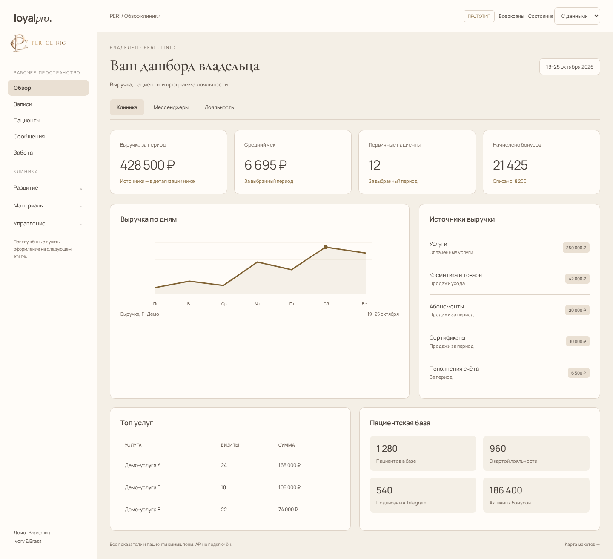
01 / МАКЕТ
Дашборд владельца
Обзор клиники и источники выручки
Посмотреть экран →Три ролевых дашборда и восемь рабочих экранов. Спокойная палитра PERI, выразительные заголовки и ясная структура. Откройте экран: ссылки между разделами работают, доступны состояния загрузки, ошибки и пустой выдачи.

Обзор клиники и источники выручки
Посмотреть экран →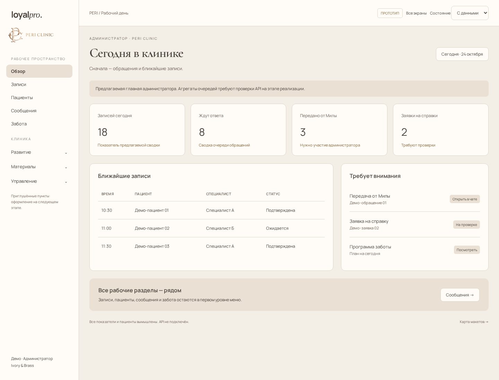
Записи и обращения на сегодня
Посмотреть экран →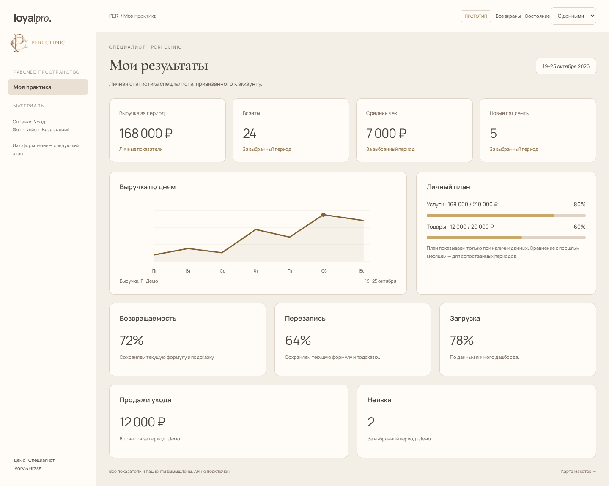
Личные результаты, планы и загрузка
Посмотреть экран →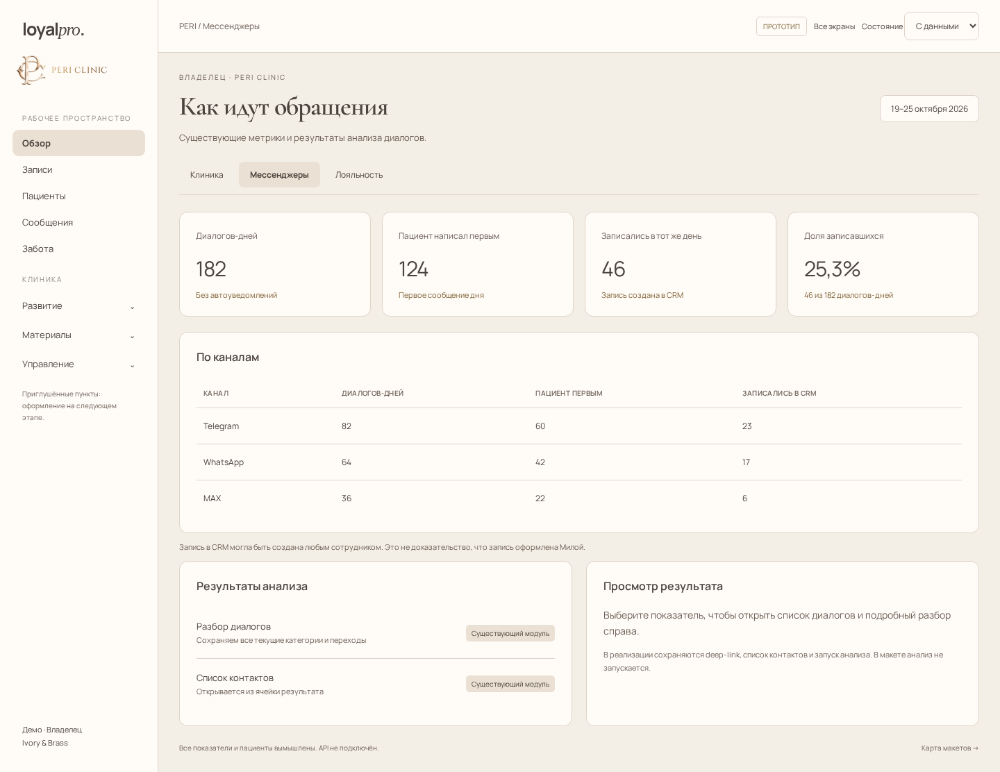
Диалоги-дни и результаты анализа
Посмотреть экран →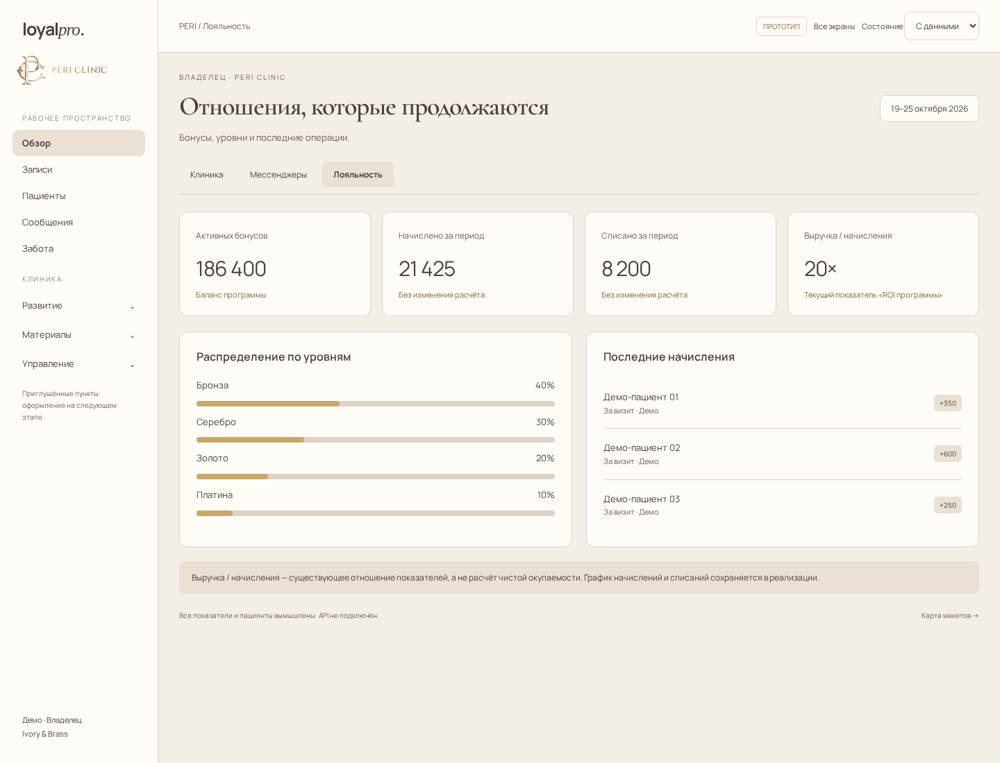
Бонусы, уровни и операции
Посмотреть экран →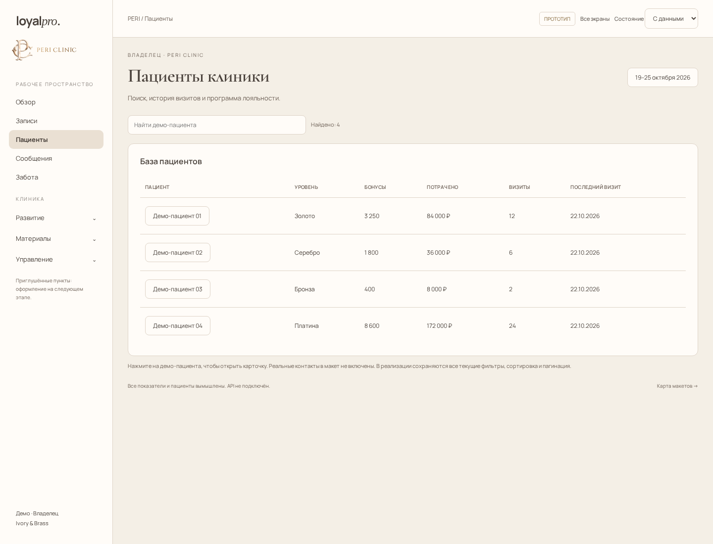
Поиск и пример карточки
Посмотреть экран →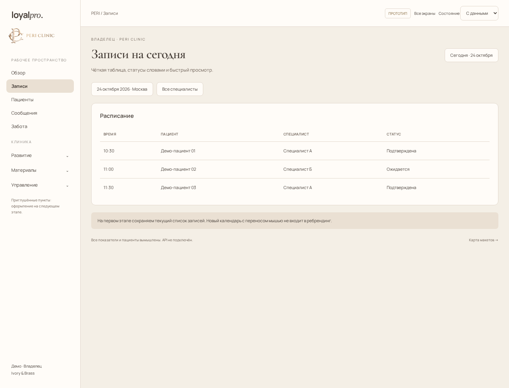
Таблица и понятные статусы
Посмотреть экран →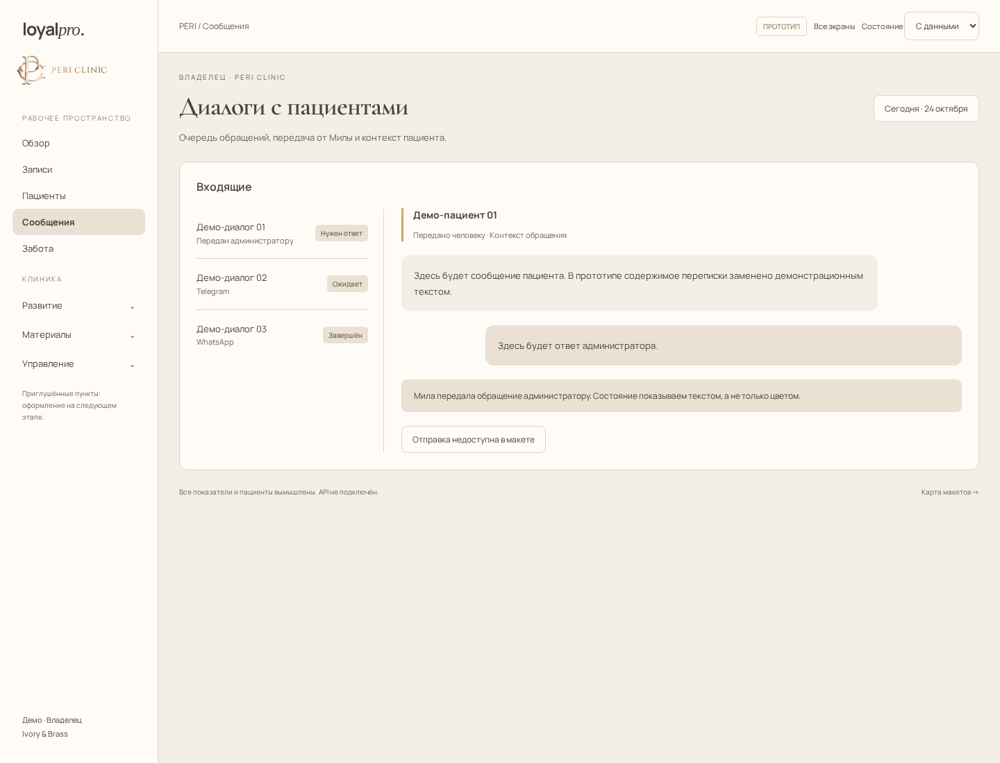
Очередь диалогов и передача от Милы
Посмотреть экран →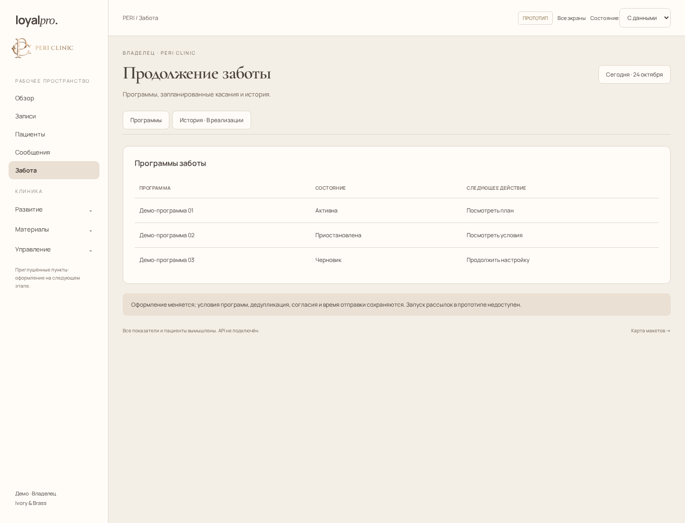
Программы и состояния
Посмотреть экран →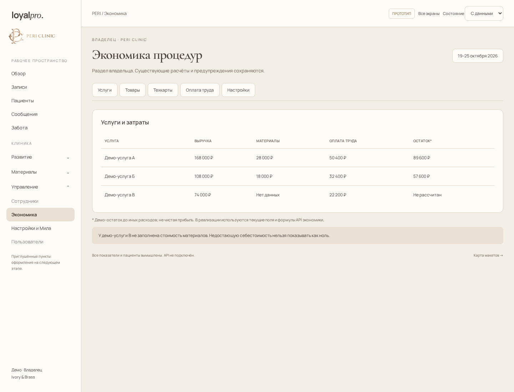
Затраты и незаполненные данные
Посмотреть экран →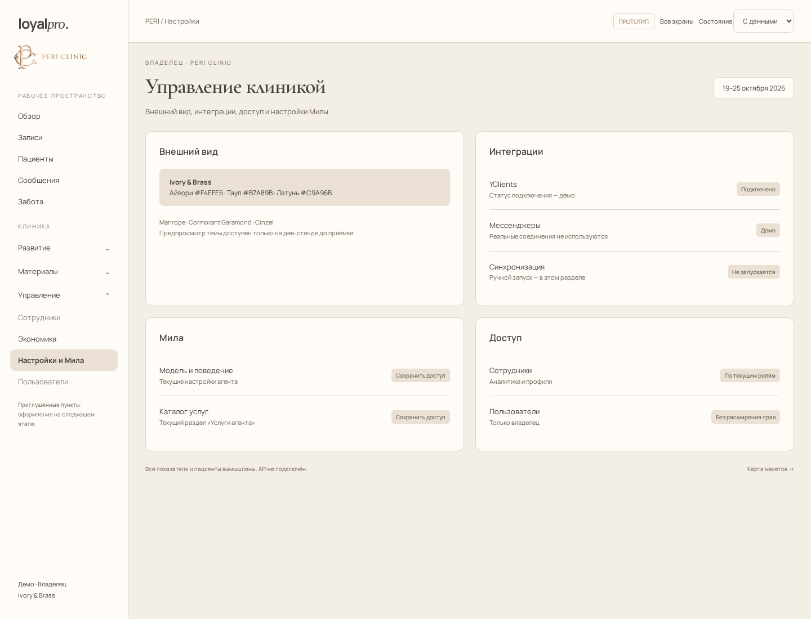
Тема, интеграции и управление
Посмотреть экран →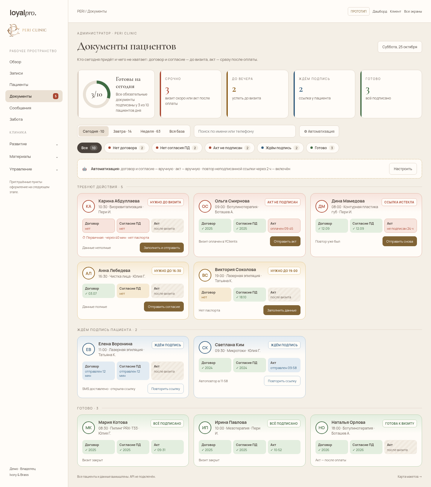
Дашборд подписей и страница пациента
Посмотреть экран →Навигация макета показывает проработанные экраны. Полная карта переноса всех текущих разделов, включая материалы, сегменты, рассылки и пользователей — в плане. Специалисту не добавляются доступ к общей базе пациентов, чату или экономике. На мобильных устройствах доступно меню разделов.